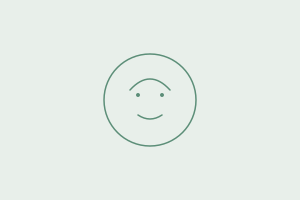
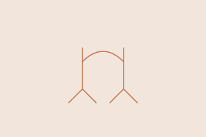

Available artwork · not realized in the product · imported under BQ-38 decision D
The product ships one thumbnail for eight cards. public/landing-card-media/ holds exactly one file, for qmbti, and it is byte-for-byte the same artwork as the runtime fallback — the same warm→sage gradient and the same two circles. So every catalog card renders one illustration today. These seven, plus an arrow, are what decision D approved taking from the older design system (825385f6); they are on this card as material for the design pass and are deliberately kept out of the card specimens, which show what ships.


Two things stand between these files and the product, and both are decisions rather than work. First, the aspect ratios do not match: the imported set is authored at viewBox="0 0 300 200", which is 3 : 2, against the card slot's 16 / 6. Dropping one into the slot crops a third of its height, and every one of them centres its subject vertically. Second, they carry five accent hues — sage, violet, gold, terracotta and blue — where this system has exactly one accent and a warm-neutral ground. Adopting them as they are would introduce a per-category palette the catalog has never had. Neither is resolved here; both are inputs to the design pass.
Never: these files in a card specimen. A specimen shows what the product renders, and the product renders the gradient above. That rule is what this card exists to hold — unlabelled absence is what produced three different hand-drawn stand-ins in the first place.